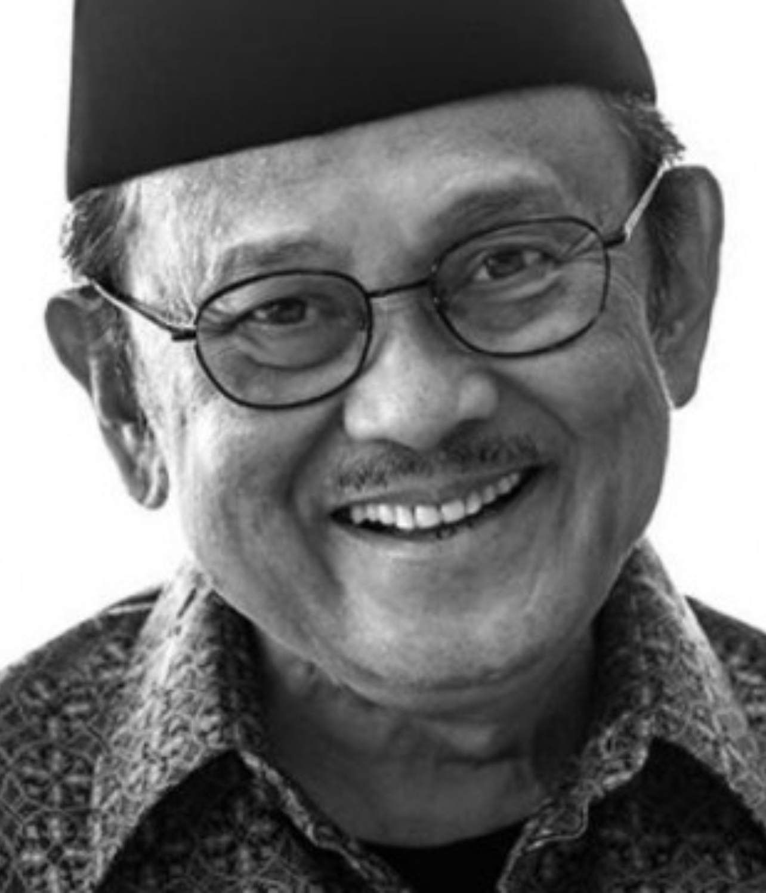

1936 - 2019
"Success is not owned by smart people, success is owned by those who always try.”
Bacharuddin Jusuf Habibie (Indonesian: 25 June 1936 – 11 September 2019) was an Indonesian politician and engineer who served as the third president of Indonesia from 1998 to 1999. Less than three months after his inauguration as the seventh vice president in March 1998, he succeeded Suharto, who resigned after 32 years in office. Originating from Sulawesi with Gorontalese-Javanese ancestry, his presidency was seen as a landmark and transition to the Reform era.